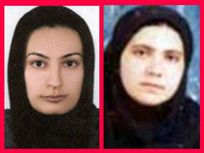

|
|

برای روناک و هانا
جرم بر اساس كدام قانون؟؟؟
انجمن ما با هم برابریم
شنبه5 مرداد 1387
حدود 9ماه است كه از بازداشت هانا عبدي و روناك صفارزاده مي گذرد. هانا عبدي دختري 21ساله كه براي دفاع از حقوق زنان در غرب كشور تلاش ميكرد , اكنون ماههاست كه پشت ميله هاي زندان به سر مي برد. به گفته مادر هانا, اوكمك به زنان بي سواد و ناتوان را هدف خود قرار داده بود . تمام زنهاي كه هانا را مي شناسند و با او در ارتباط بودند با اخلاق و اهداف هانا اشنا بودند. هانا براي زنان محله كلاس مي گذاشت وبا گرفتن كمكهاي ماهيانه و شناسايي زنان بي بضاعت به آنها كمك مي كرد .بعد از مدتي كمك با راه اندازي انجمن زنان اذر مهر كردستان فعاليت خود را گسترش داد و زنان ودختران زيادي به عضويت انجمن درآمدند من و ديگر دوستان هانا کنار هم بوديم.
روناك كه هم اكنون در زندان است وسرنوشتي مانند هانا دارد مثل امروز هميشه كنار هانا بود. اولين گام خود را با كتابخانه اي هر چند كوچك در انجمن شروع كردند و با رفتن به روستاهاي اطراف در سرماي زمستان زنان را در مدارس و مسجدها دور هم جمع مي كردند و زبان مادري را تدريس مي كردند و با دعوت از وكلا در كلاسها حق و حقوق زنان را بيشتر تشريح مي كردند. گذاشتن يك دوره كلاس بنام تاريخ زن, بر پايي مراسم ها و جشن هايي در روز زن و روز مادر از جمله فعاليتهاي او بود.
اكنون پس از تحمل 9ماه زندان , با اتهام اجتماع و تباني جهت اقدام عليه امنيت ملي, به 5سال زندان در تبعيد محكوم شده است. اين چه جرمي است كه نه در قانون انسانيت و نه در آيين اسلامي به رسميت شناخته شده نمي باشد؟
البته در حكومتي مردسالار قوانين بر ضد زنان نوشته شده است چرا كه حكم هانا عبدي همچون ديگر زنان فعالي كه به آنها اتهام اقدام عليه امنيت ملي زده مي شود كمترين مطابقتي با معيارهاي قانوني و قضايي ندارد. به چه دليل به وكيل هانا حق ملاقات و صحبت با موكل خود داده نشد؟ و چرا در دادگاهي كه علني بودن آن اعلام شده بود از حضور بستگان هانا در دادگاه جلوگيري شد؟
ما , اعضاي انجمن دفاع از حقوق زنان ”ماباهم برابريم ” اعتراض خود را به احكام غير منصفانه صادر شده براي هانا عبدي و روناك صفارزاده را اعلام ميداريم و خواهان حذف اين احكام هستيم. همچنين از تمامي ارگانهاي حقوق بشري و مدافعان حقوق زن مي خواهيم كه براي آزادي اين دوستان تلاش كنند.
انجمن دفاع از حقوق زنان”ماباهم برابريم”